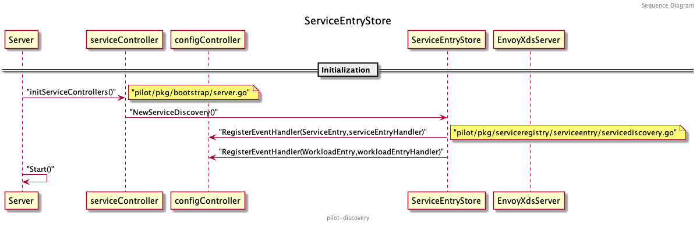
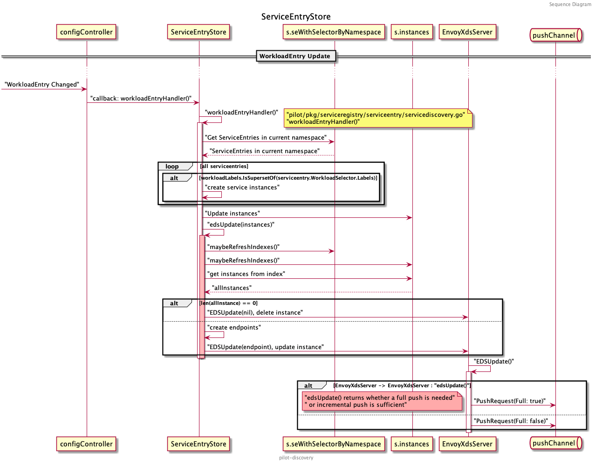
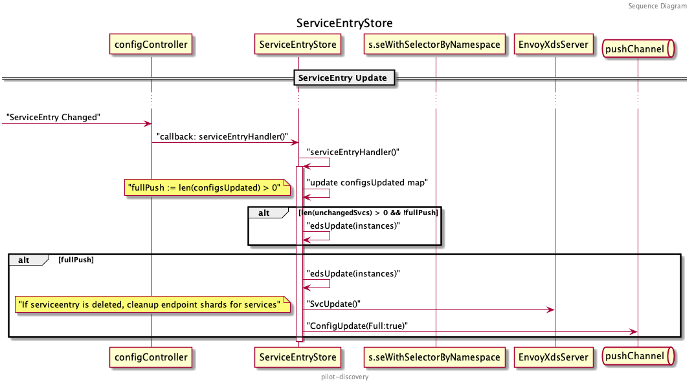

了解了 Pilot 源码的基本结构和启动流程之后，我们可以深入探索 Pilot 究竟是怎么下发 xDS 协议的，以及协议的生成逻辑。相信大家都会有这些疑问：控制面与数据面详细的交互过程是什么？到底什么时候才会增量推送？增量推送判断的逻辑是什么？ 非 Kubernetes 原生的服务（如存在于虚拟机的服务、 Dubbo 服务等）到底是怎么注册并且经过一系列转化下发至数据面的？
带着这些问题，开始我们今天对 Pilot 的探索。
注：本文基于 istio release-1.7 分支分析，其他版本的代码结构会有所不同。
ServiceEntryStore
在多点落地 ServiceMesh 的过程中，大量的用到了 ServiceEntry ，每一个 Dubbo 服务都会映射一个 ServiceEntry 创建在 Kubernetes 里。 ServiceEntry 的作用就是将集群外部的服务注册到 Pilot 中，再统一由 ServiceController 进行管理。相应的，管理外部服务实例的对象为 WorkloadEntry ， ServiceEntry 可以通过 LabelSelector 筛选出自身对应的实例。
ServiceEntry 是作为 CR (Custome Resource) 保存在 Kubernetes 集群里的（也可以通过 MCP 服务直接发送给 Pilot ），暂时只讨论在集群中创建 CR 的情况。在上一篇源码分析中我们介绍到， Pilot 是通过 ConfigController 来监听创建在集群中的 CR 的， ServiceEntry 也不例外，保存这些 CR 的 ConfigStore 会被转化为 ServiceEntryStore 中的 store （转化的详情见上一篇源码分析），这就是最终 Pilot 存储 ServiceEntry 的地方。当监听的资源推送更改的事件时，会触发 ServiceEntryStore 对应的 handler 处理后续的流程。
我们先来看一下 ServiceEntryStore 的结构和它提供的方法：
// istio/pilot/pkg/serviceregistry/serviceentry/servicediscovery.go:61
// ServiceEntryStore communicates with ServiceEntry CRDs and monitors for changes
type ServiceEntryStore struct {
XdsUpdater model.XDSUpdater // 用来接收 EnvoyXdsServer 的接口，主要用来 Push 相应的 xDS 更新请求
store model.IstioConfigStore // 保存 ServiceEntry 实例的地方
storeMutex sync.RWMutex // 读写 store 时需要的锁
// 以 hostname/namespace 以及类型（是服务还是实例）等作为索引的服务实例表
instances map[instancesKey]map[configKey][]*model.ServiceInstance
// seWithSelectorByNamespace 保存了每个 namespace 里所有的 ServiceEntry，也是作为一个索引供 handler 使用
seWithSelectorByNamespace map[string][]servicesWithEntry
refreshIndexes bool
...
}
可以看到除了 XdsUpdater 和 store 两个必须的结构外，其余大部分都是些资源的缓存和索引（索引键不同），为后续 handler 处理事件时提供便利。除了结构，还需要关注两个比较重要的 handler :
// WorkloadEntry 变化时的处理逻辑
func (s *ServiceEntryStore) workloadEntryHandler(old, curr model.Config, event model.Event) {}
// ServiceEntry 变化时的处理逻辑
func (s *ServiceEntryStore) serviceEntryHandler(old, curr model.Config, event model.Event) {}
这两个 handler 的业务逻辑后文中再详细讨论，先来回忆下 ServiceEntryStore 的初始化流程：

在 Server 初始化 ServiceController 的时候，通过调用 NewServiceDiscovery() 方法初始化 ServiceEntryStore ，这里除了将 EnvoyXdsServer 和 IstioConfigStore 与 ServiceEntryStore 关联起来外，最重要的就是向 ConfigController 注册了 ServiceEntry 和 WorkloadEntry 的事件 Handler:
func NewServiceDiscovery(configController model.ConfigStoreCache, store model.IstioConfigStore, xdsUpdater model.XDSUpdater) *ServiceEntryStore {
s := &ServiceEntryStore{
XdsUpdater: xdsUpdater,
store: store,
ip2instance: map[string][]*model.ServiceInstance{},
instances: map[instancesKey]map[configKey][]*model.ServiceInstance{},
workloadInstancesByIP: map[string]*model.WorkloadInstance{},
refreshIndexes: true,
}
if configController != nil {
configController.RegisterEventHandler(gvk.ServiceEntry, s.serviceEntryHandler)
configController.RegisterEventHandler(gvk.WorkloadEntry, s.workloadEntryHandler)
}
return s
}
这样在 ConfigController 监听到资源变化的时候，就会调用 serviceEntryHandler 和 workloadEntryHandler 来处理事件了。这两个 handler 的目的都是向 EnvoyXdsServer 推送相应的 xDS 资源变化。
workloadEntryHandler
首先来分析服务实例 WorkloadEntry 的更新是如何下发 xDS 的：

seWithSelectorByNamespace 和 instances 如上述 ServiceEntryStore 结构介绍中的注释，前者缓存了各个 namespace 中所有的 ServiceEntry ，后者则是所有服务节点 WorkloadEntry 的缓存。
当有新的 WorkloadEntry 变化时，先从 seWithSelectorByNamespace 中读取同一 namespace 中的 ServiceEntry ，遍历它们并与 WorkloadEntry 的 Label 进行比对，确定是关联的服务后，依据获取的服务创建 ServiceInstance 。 ServiceInstance 是 Pilot 抽象出的描述具体服务对应实例的结构:
type ServiceInstance struct {
Service *Service `json:"service,omitempty"`
ServicePort *Port `json:"servicePort,omitempty"`
Endpoint *IstioEndpoint `json:"endpoint,omitempty"`
}
创建了新的 ServiceInstance 后，需要及时更新实例的索引表 s.instances :
if event != model.EventDelete {
s.updateExistingInstances(key, instances)
} else {
s.deleteExistingInstances(key, instances)
}
之后将新创建的 ServiceInstance 传入 ServiceEntryStore 专门处理 EDS 的函数 s.edsUpdate() 。在做进一步处理时，需要再刷新一遍索引表，调用 maybeRefreshIndexes() 避免其他协程的工作导致索引表更新不及时，完成后开启读锁，从服务实例索引表 s.Instances 中查找我们要处理的实例。如果是删除事件，先前更新索引表的时候已经删除了，所以这里是查不到 allInstances 的，直接向 EnvoyXdsServer 发送删除 EDS 的请求。
// edsUpdate triggers an EDS update for the given instances
func (s *ServiceEntryStore) edsUpdate(instances []*model.ServiceInstance) {
allInstances := []*model.ServiceInstance{}
// Find all keys we need to lookup
keys := map[instancesKey]struct{}{}
for _, i := range instances {
keys[makeInstanceKey(i)] = struct{}{}
}
s.maybeRefreshIndexes()
s.storeMutex.RLock()
for key := range keys {
for _, i := range s.instances[key] {
allInstances = append(allInstances, i...)
}
}
s.storeMutex.RUnlock()
// This was a delete
if len(allInstances) == 0 {
for k := range keys {
_ = s.XdsUpdater.EDSUpdate(s.Cluster(), string(k.hostname), k.namespace, nil)
}
return
}
...
}
如果实例有更新则直接发送更新 EDS 的请求：
// edsUpdate triggers an EDS update for the given instances
func (s *ServiceEntryStore) edsUpdate(instances []*model.ServiceInstance) {
...
endpoints := make(map[instancesKey][]*model.IstioEndpoint)
for _, instance := range allInstances {
port := instance.ServicePort
key := makeInstanceKey(instance)
endpoints[key] = append(endpoints[key],
&model.IstioEndpoint{
Address: instance.Endpoint.Address,
EndpointPort: instance.Endpoint.EndpointPort,
ServicePortName: port.Name,
Labels: instance.Endpoint.Labels,
UID: instance.Endpoint.UID,
ServiceAccount: instance.Endpoint.ServiceAccount,
Network: instance.Endpoint.Network,
Locality: instance.Endpoint.Locality,
LbWeight: instance.Endpoint.LbWeight,
TLSMode: instance.Endpoint.TLSMode,
})
}
for k, eps := range endpoints {
_ = s.XdsUpdater.EDSUpdate(s.Cluster(), string(k.hostname), k.namespace, eps)
}
}
完整的 workloadEntryHandler() 代码如下：
func (s *ServiceEntryStore) workloadEntryHandler(old, curr model.Config, event model.Event) {
wle := curr.Spec.(*networking.WorkloadEntry)
key := configKey{
kind: workloadEntryConfigType,
name: curr.Name,
namespace: curr.Namespace,
}
...
s.storeMutex.RLock()
// We will only select entries in the same namespace
entries := s.seWithSelectorByNamespace[curr.Namespace]
s.storeMutex.RUnlock()
// if there are no service entries, return now to avoid taking unnecessary locks
if len(entries) == 0 {
return
}
log.Debugf("Handle event %s for workload entry %s in namespace %s", event, curr.Name, curr.Namespace)
instances := []*model.ServiceInstance{}
for _, se := range entries {
workloadLabels := labels.Collection{wle.Labels}
if !workloadLabels.IsSupersetOf(se.entry.WorkloadSelector.Labels) {
// Not a match, skip this one
continue
}
instance := convertWorkloadEntryToServiceInstances(wle, se.services, se.entry)
instances = append(instances, instance...)
}
if event != model.EventDelete {
s.updateExistingInstances(key, instances)
} else {
s.deleteExistingInstances(key, instances)
}
s.edsUpdate(instances)
}
接下来就是 EnvoyXdsServer 来处理这次 EDS 的更新请求了。首先 EnvoyXdsServer 会判断此次 EDS 更新是全量下发还是增量下发，然后创建 PushRequest 发送至 EnvoyXdsServer 统一用来接收推送请求的 pushChannel 。
func (s *DiscoveryServer) EDSUpdate(clusterID, serviceName string, namespace string,
istioEndpoints []*model.IstioEndpoint) error {
inboundEDSUpdates.Increment()
// 判断是否是全量下发
fp := s.edsUpdate(clusterID, serviceName, namespace, istioEndpoints)
s.ConfigUpdate(&model.PushRequest{
Full: fp,
ConfigsUpdated: map[model.ConfigKey]struct{}{{
Kind: gvk.ServiceEntry,
Name: serviceName,
Namespace: namespace,
}: {}},
Reason: []model.TriggerReason{model.EndpointUpdate},
})
return nil
}
pushChannel 后续的处理流程和 EDS 是否增量更新将在下文讨论 EnvoyXdsServer 的时候再分析，这里不再赘述。
serviceEntryHandler
了解了 WorkloadEntry 的更新是如何处理之后，我们再来看下 serviceEntryHandler 是如何处理 ServiceEntry 的：

serviceEntryHandler 会将 ServiceEntry 转化为一组 Pilot 内部抽象的服务，每个不同的 Hosts 、 Address 都会对应一个 Service ，并且初始化一个名为 configsUpdated 的 map 来保存是否有 ServiceEntry 需要更新，以及创建了多个 slice 分别保存该新增、删除、更新和没有变化的服务：
func (s *ServiceEntryStore) serviceEntryHandler(old, curr model.Config, event model.Event) {
cs := convertServices(curr)
configsUpdated := map[model.ConfigKey]struct{}{}
var addedSvcs, deletedSvcs, updatedSvcs, unchangedSvcs []*model.Service
...
}
根据不同的事件类型，更新不同的 slice :
switch event {
case model.EventUpdate:
os := convertServices(old)
if selectorChanged(old, curr) {
// Consider all services are updated.
mark := make(map[host.Name]*model.Service, len(cs))
for _, svc := range cs {
mark[svc.Hostname] = svc
updatedSvcs = append(updatedSvcs, svc)
}
for _, svc := range os {
if _, f := mark[svc.Hostname]; !f {
updatedSvcs = append(updatedSvcs, svc)
}
}
} else {
addedSvcs, deletedSvcs, updatedSvcs, unchangedSvcs = servicesDiff(os, cs)
}
case model.EventDelete:
deletedSvcs = cs
case model.EventAdd:
addedSvcs = cs
default:
// this should not happen
unchangedSvcs = cs
}
比较特别的是，当事件为更新事件时，会和老的 Service 列表进行比对。先看是否有某个服务的 Selector 发生了变化，如果发生了变化，需要将新老服务列表里的所有服务都加入到更新列表中。如果 Selector 没有发生变化，通过 serviceDiff() 挨个比对新老服务列表中的服务，对应保存至新增、删除、更新和未变化的 slice 中。
将服务归类后，把需要变化的服务都写入 configsUpdated 中：
for _, svcs := range [][]*model.Service{addedSvcs, deletedSvcs, updatedSvcs} {
for _, svc := range svcs {
configsUpdated[model.ConfigKey{
Kind: gvk.ServiceEntry,
Name: string(svc.Hostname),
Namespace: svc.Attributes.Namespace}] = struct{}{}
}
}
由于 serviceDiff() 只会比对 Service 结构，并不会对比 Endpoints 是否变化，所以当有 unchangedSvcs 时，可能需要对这些服务的 xDS 做增量更新（只更新 EDS ），也可能是全量更新。什么时候会全量更新呢？当服务的 Resolution 为 DNS 时（可以阅读文档了解 Resolution ）， Endpoint 的 address 都是全域名，需要更新 CDS 才行。
if len(unchangedSvcs) > 0 {
// If this service entry had endpoints with IPs (i.e. resolution STATIC), then we do EDS update.
// If the service entry had endpoints with FQDNs (i.e. resolution DNS), then we need to do
// full push (as fqdn endpoints go via strict_dns clusters in cds).
currentServiceEntry := curr.Spec.(*networking.ServiceEntry)
oldServiceEntry := old.Spec.(*networking.ServiceEntry)
if currentServiceEntry.Resolution == networking.ServiceEntry_DNS {
if !reflect.DeepEqual(currentServiceEntry.Endpoints, oldServiceEntry.Endpoints) {
// fqdn endpoints have changed. Need full push
for _, svc := range unchangedSvcs {
configsUpdated[model.ConfigKey{
Kind: gvk.ServiceEntry,
Name: string(svc.Hostname),
Namespace: svc.Attributes.Namespace}] = struct{}{}
}
}
}
}
当 unchangedSvcs 的 Resolution 为 STATIC 时，只需要增量的更新 EDS 即可：
if len(unchangedSvcs) > 0 && !fullPush {
// IP endpoints in a STATIC service entry has changed. We need EDS update
// If will do full-push, leave the edsUpdate to that.
// XXX We should do edsUpdate for all unchangedSvcs since we begin to calculate service
// data according to this "configsUpdated" and thus remove the "!willFullPush" condition.
instances := convertInstances(curr, unchangedSvcs)
key := configKey{
kind: serviceEntryConfigType,
name: curr.Name,
namespace: curr.Namespace,
}
// If only instances have changed, just update the indexes for the changed instances.
s.updateExistingInstances(key, instances)
s.edsUpdate(instances)
return
}
如果 configsUpdated 中有值，则需要做 fullPush ，先更新这些服务的 EDS ，再向 pushChannel 发送 fullPush 的 PushRequest :
if fullPush {
// When doing a full push, for added and updated services trigger an eds update
// so that endpoint shards are updated.
var instances []*model.ServiceInstance
if len(addedSvcs) > 0 {
instances = append(instances, convertInstances(curr, addedSvcs)...)
}
if len(updatedSvcs) > 0 {
instances = append(instances, convertInstances(curr, updatedSvcs)...)
}
if len(unchangedSvcs) > 0 {
currentServiceEntry := curr.Spec.(*networking.ServiceEntry)
oldServiceEntry := old.Spec.(*networking.ServiceEntry)
// Non DNS service entries are sent via EDS. So we should compare and update if such endpoints change.
if currentServiceEntry.Resolution != networking.ServiceEntry_DNS {
if !reflect.DeepEqual(currentServiceEntry.Endpoints, oldServiceEntry.Endpoints) {
instances = append(instances, convertInstances(curr, unchangedSvcs)...)
}
}
}
s.edsUpdate(instances)
// If service entry is deleted, cleanup endpoint shards for services.
for _, svc := range deletedSvcs {
s.XdsUpdater.SvcUpdate(s.Cluster(), string(svc.Hostname), svc.Attributes.Namespace, model.EventDelete)
}
pushReq := &model.PushRequest{
Full: true,
ConfigsUpdated: configsUpdated,
Reason: []model.TriggerReason{model.ServiceUpdate},
}
s.XdsUpdater.ConfigUpdate(pushReq)
}
至此， ServiceEntryStore 是如何处理 ServiceEntry 和 WorkloadEntry 的逻辑就介绍完了。其余像 ServiceEntry 选择集群内的 Pods 、 Kubernetes 原生 Service 选择 WorkloadEntry 的用法读者感兴趣可以自行研究相关源码。
其余注册中心的处理逻辑如 kube 、 mcp 等可继续关注本系列的其他文章。读者也可以自行尝试走读分析：
// 相关源码目录
kube: pilot/pkg/serviceregistry/kube
mcp: pilot/pkg/serviceregistry/mcp
接下来我们介绍 Pilot Server 中的核心， EnvoyXdsServer 。